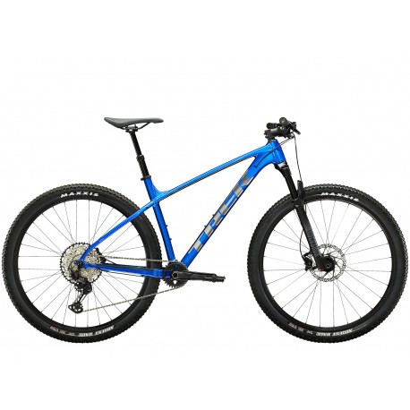

Reseña de la Bicicleta Trek Marlin: Rendimiento Off-Road con
Espíritu Aventurero

La Trek Marlin es la elección perfecta para aquellos entusiastas del
ciclismo de montaña que buscan un rendimiento confiable sin romper
el presupuesto. Diseñada para conquistar senderos desafiantes y
ofrecer una experiencia emocionante, la Trek Marlin combina calidad,
durabilidad y asequibilidad.
Diseño Todo Terreno:
Con un
cuadro resistente y una geometría diseñada para el rendimiento en
todo tipo de terrenos, la Trek Marlin se enfrenta con valentía a los
desafíos de los senderos de montaña. La combinación de robustez y
agilidad garantiza un manejo preciso y estable en cualquier
situación.
Suspensión Efectiva:
Equipada con una
suspensión delantera de calidad, la Trek Marlin absorbe los golpes y
las irregularidades del terreno, proporcionando un viaje suave y
cómodo. Ya sea en ascensos empinados o descensos vertiginosos, la
bicicleta mantiene el control y la tracción.
Componentes de
Alto Rendimiento:
Los componentes de alto rendimiento, desde la
transmisión hasta los frenos, aseguran un funcionamiento suave y
eficiente en cada pedaleo. La Trek Marlin está lista para
enfrentarse a cualquier desafío en el camino, ofreciendo cambios
precisos y frenadas confiables. Comodidad Ergonómica: Con un diseño
que prioriza la comodidad del ciclista, la Trek Marlin presenta un
manillar y un sillín ergonómicos que permiten largas jornadas de
pedaleo sin fatiga. La posición de conducción equilibrada
proporciona control y confianza en terrenos técnicos.
Accesibilidad
sin Compromisos:
Lo más destacado de la Trek Marlin es su
capacidad para ofrecer rendimiento de alto nivel a un precio
asequible. Esta bicicleta de montaña proporciona una entrada
accesible al emocionante mundo del ciclismo de montaña sin
comprometer la calidad y la durabilidad.
Conclusión:
En
resumen, la Trek Marlin es una bicicleta de montaña versátil que
combina rendimiento, durabilidad y accesibilidad. Ya sea que estés
explorando nuevos senderos o desafiando tus límites en terrenos
técnicos, la Trek Marlin está lista para acompañarte en cada
aventura. Con esta bicicleta, la emoción del ciclismo de montaña
está al alcance de todos.
Nota: Los detalles específicos pueden
variar según el modelo y las actualizaciones del fabricante. Se
recomienda verificar las especificaciones actuales al realizar la
compra.
COMPRA YA!